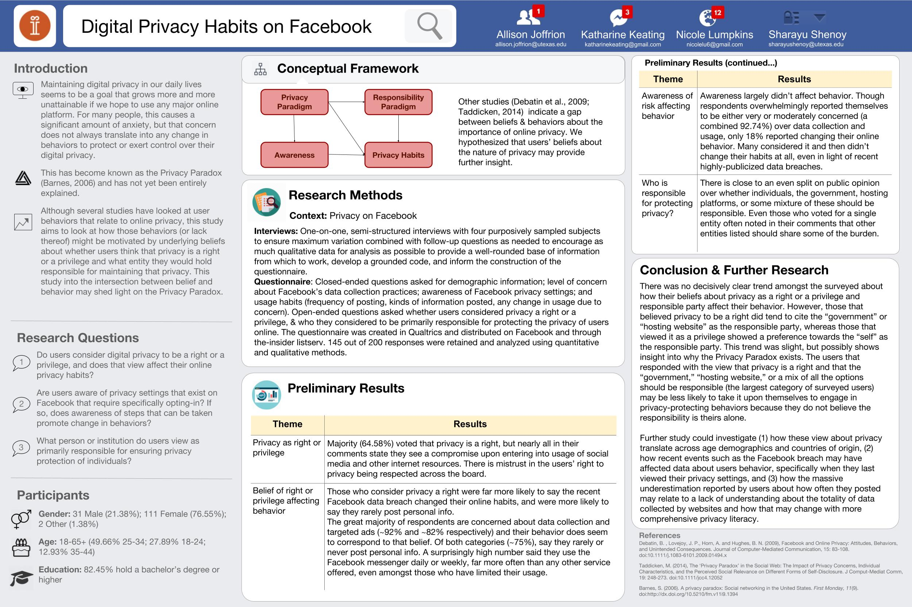

Digital Privacy Habits on Facebook
Contributors: Kat Keating, Sharayu Shenoy, Allison Joffrion, Nicole Lumpkins
Course: Understanding Research
Problem Statement/Rationale
Maintaining digital privacy in our daily lives seems to be a goal that grows more and more unattainable if we hope to use any major online platforms. Between companies tracking our location, viewing habits, and selling our data for profit, it is basically a given that some of our personal information will be used in ways we can’t control. Every time we sign a Terms of Use Agreement, we relinquish some of our right to privacy and every time we use that platform, our information is released to unknown parties. Some people try to maintain as much privacy as possible by restricting their personal use of these platforms, meticulously combing through security features offered by the platforms, deleting cookies, and even using VPNs (Virtual Private Networks). Although there is ample literature about user behavior in relation to online privacy, our study hopes to further the concept by investigating whether or not those behaviors are motivated by an underlying belief that users hold about online privacy being a right as opposed to a privilege.
Our study seeks to examine the intersection between a person’s beliefs and their behaviors. We have also chosen to focus our study on the use of Facebook, the popular social networking site that undergoes significant scrutiny for its data collection, but is largely impenetrable to outsiders. We chose Facebook because it is a large online platform that offers ways to alter security settings, is a social network made for the sole purpose of consciously sharing personal information online, and has been known to overstep its boundaries when tracking user’s personal data. We anticipate that the results will show a trend in how proactive or lax a user is in policing their online data and their views about where the responsibility of digital privacy lies. We hope that researching that trend will shed light on how user understanding of online privacy motivates any protective behaviors in order to contribute to the larger conversation about consumer privacy and promote a culture of privacy literacy in online environments.
